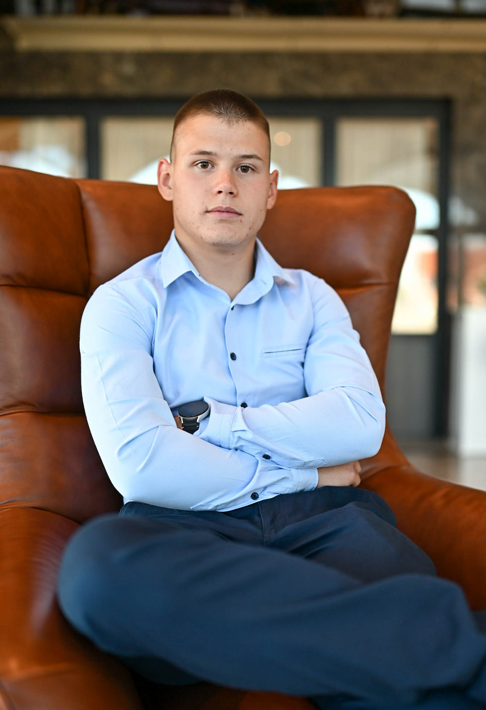

Motivisan i posvećen student inženjerskog menadžmenta sa snažnim interesovanjem za oblast informacionih tehnologija. Spajam iskustvo u razvoju softvera sa organizacionim i liderskim veštinama i težim poziciji menadžera u kompaniji koja vrednuje inovativnost, timski rad i kontinuirano usavršavanje.
Inženjerski menadžment – prva godina osnovnih studija
2026 – danasSmer: Elektrotehničar informacionih tehnologija
2022 – 2025Kao član tima osvojio 3. mesto na jubilarnom, desetom Galaksija kupu – državnom takmičenju Zajednice elektrotehničkih škola Srbije u razvoju tehničkih rešenja zasnovanih na mikrokontrolerskim platformama. Učestvovao u osmišljavanju, razvoju i prezentaciji projekta pred stručnim žirijem.
Dvostruki šampion Balkana u sim driftu. Takmičenja na ovom nivou zahtevaju preciznost, koncentraciju, brzo donošenje odluka i doslednost pod pritiskom, kao i kontinuiran rad na analizi i unapređenju sopstvenih performansi.
Član ESTIEM-a (Evropska asocijacija studenata inženjerskog menadžmenta i industrijskog inženjerstva). Učešće u studentskim projektima, razmenama i događajima, razvoj timskog rada, organizacionih i komunikacionih veština kroz međunarodnu mrežu studenata.
Osmislio humanitarne i društvene akcije „Dan ljubaznosti“ i „Daruj radost, deli sreću“ u okviru Kancelarije za mlade Čačak. Glavni nosilac ideje i koncepta akcija, koje se i dalje uspešno organizuju. Ovo iskustvo pokazuje moju kreativnost, inicijativu i sposobnost da ideju pretvorim u projekat koji okuplja mlade i doprinosi zajednici.
Razvoj kompletnog web sajta za Kancelariju za mlade Čačak. Odgovoran za frontend i backend razvoj, dizajn korisničkog interfejsa, implementaciju funkcionalnosti i optimizaciju performansi. Sajt omogućava mladima lakši pristup pravnim uslugama i informacijama.
Razvoj namenske aplikacije za generisanje ponuda za klijenta. Aplikacija automatski generiše profesionalne ponude na osnovu unetih parametara, uz mogućnost prilagođavanja šablona i izvoza u različite formate. Implementirane su napredne funkcionalnosti za upravljanje bazom podataka i generisanje PDF dokumenata.
Pozicija koja zahteva maksimalnu odgovornost, oštru percepciju i procenu situacija u realnom vremenu. Odgovoran za bezbednost vozača i ekipe tokom drift događaja, koordinaciju sa drugim članovima tima i praćenje performansi vozila u visokorizičnim uslovima.
Posedujem crni pojas 1. dan u realnom aikidou, što dokazuje moju disciplinu, fizičku kondiciju, sposobnost kontrole stresa i odlučnost u postizanju dugoročnih ciljeva. Ova veština razvija i timski rad, komunikaciju i liderstvo.
Odlično poznavanje programa VCDS (VAG-COM Diagnostic System) i ODIS (Offboard Diagnostic Information System) za dijagnostiku i servis automobila. Ova veština pokazuje moju tehničku preciznost, analitičko razmišljanje i sposobnost rada sa kompleksnim softverskim sistemima.
Kroz vannastavne aktivnosti i volontiranje stekao sam iskustvo u vođenju i koordinaciji timova, organizaciji događaja i preuzimanju odgovornosti za rezultate tima.
Aktivno učešće u edukacijama i projektima NVO
Sertifikovani treninzi i volontiranje